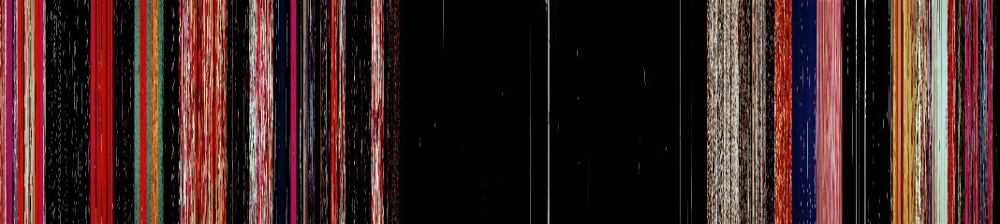
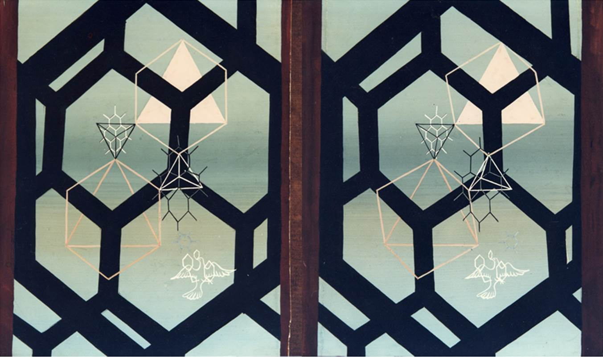

Norman McLaren
Norman McLaren was both practitioner and theorist, artist and innovator. Half scientist, half artist. McLaren created over 60 films in his career, using a huge diversity of animation, stop-motion, sound generation, live action, and post-processing techniques, some of which he innovated. McLaren showed an astounding intensity of creativity and invention, with a strong affinity for rhythm and the extension of image over time. Born in Scotland, McLaren emigrated to Canada in 1941, having spent previous years in London and New York. He worked from the NFB until 1984, founding the NFB's animation studio. McLaren received an Oscar, a Palme d'Or, the Order of Canada, multiple BAFTAs, and many other accolades in his career, most of which was spent at the National Film Board of Canada.
"McLaren refused to accept the simple narrative that claimed cinema had been invented by the Lumière brothers in 1895; he was of the opinion that the art form had yet to fully come into its own, and that research and experimentation were the natural ingredients of artistic creation. He thus emerged as a pioneer of countless techniques that have become hallmarks of animation: drawing and engraving on film, cross-dissolves, pixillation, synthesized sound, and many others. Pre-existing methods and formulas had no place in his approach. Uncommon boldness and originality were the creative sources for all his work... McLaren’s personality and philosophy were inseparable from the direction animation took at the NFB. A tireless innovator, he championed a creative concept of animation that views filmmakers as artisans who take charge of every step of the production of their films, much like artists in their studios. Consequently, McLaren set an example for his colleagues, motivating them to develop their own tools and experiment with new techniques." http://mclarenwalltowall.com/en/norman-mclaren

By Jack Long/National Film Board of Canada -
This image is available from Library and Archives Canada under the reproduction reference number PA-169509 and under the MIKAN ID number 3231352.
{kind=link}
"Animation is not the art of drawings-that-move, but rather the art of movements-that-are-drawn. What happens between each frame is more important than what happens on each frame."
Norman McLaren, circa 1955. In Georges Sifianos, "The Definition of Animation: A Letter from Norman McLaren", Animation Journal 3, 2 (Spring 1995): 62-66"...in a way when you’re animating a creature, if the creature is moving, you are that animal, you feel the motion."
"A basic quality of us human beings, and in fact all living creatures, is that we are always moving. Almost all sensory stimuli picked up by our sense receptors are in movement, if not by the motion of the world around us, then by the movement of our bodies. The basic substance of cinema is movement. The visuals may be split into two main elements, the things that don't move, which sink into insignificance when compared with the second element - the things that move. It is the mobile element of visuals that counts, it is the motion that speaks to us. In fact the mobile element can almost always be broken down into two components, the form of the moving object, and the motion itself. It is this motion that is the heart of the cinema, and that makes film such a powerful medium."
"Animation is manipulating difference."
Norman McLaren: Creative Process (Documentary, Donald Williams, 1990). Available online from the NFB
Visual music / proto-music videos -- making image for sound
Norman McLaren's driving insight was that it is movement itself that gives meaning to cinema, yet this is often expressed in a very musical or choreographic manner.
As a teenager listening to music on the radio, he would close his eyes and see shapes dancing to the sounds, and dreamed of making these movements real. His first films had musical scripts rather than narrative dialogues. McLaren was gifted with a synaesthetic imagination: music produced a flow of images and colours in his mind’s eye. Attempting a visual translation of music, a plastic counterpoint, "the expression of the spirit of music", accounts for perhaps half of his output.
In Begone Dull Care McLaren is using hand painted and scratched frames. Begone Dull Care has discrete objects as well as mobile textures, all tightly synchronized to the music (and often anticipating it), everything in movement, physically and transformative, duplicating, a kind of stream of consciousness of intuitive correspondences (but a stream of consciousness in the music, in McLaren, not in us). Motifs are repeated; we can join in, anticipate, but still be surprised; this is still an illustration of music. He achieves great complexity by layering not just different images but different techniques, different correspondences (abstract, referential, geometric, sketched etc), a dance of images that is pulsating with its own hyper-caffeinated generation of ideas… McLaren aims for an improvised visual performance to accompany the improvised music, though it often returns to symbolic, iconic or otherwise structural references.
Drawing directly on film
See his short documentary Pen Point Percussion (1951), as well as https://www.nfb.ca/film/creative_process_norman_mclaren/ @20:10 - @22:45
In part his choice of drawing directly on film was due to financial constraints: unable to afford film stock, he obtained existing films, scratched off the emulsion and painted them anew).
"Hand-made cinema is like watching thought, if thought could be seen."
Preserves an intimacy and permits direct metamorphosis of forms.
"It's all a matter of trying to make sure the complexities of filmmaking get you down. I try as much as possible to preserve, in my relationship to the film, the same closeness and intimacy that exists between a painter and his canvas."
"All of McLaren’s films may be considered as filmic adventures in-between, both in the sense of intervening between frames in unexpected ways, and in treating the film strip, that physical thing that ordinarily mediates between camera and projector, as the primary object of artistic activity."
Bill Schaffer. The Riddle of the Chicken: The Work of Norman McLaren. April 2005. Online, accessed September 2016. http://sensesofcinema.com/2005/cteq/norman_mclaren/
Sound-on-film synthesis/composition -- making sound from image
Creating music with light. Discovered by accident, but then used in Dots (1940) and Loops (1940) in part to avoid paying for music rights!
"McLaren created and catalogued dozens of index cards, each painted with a pattern of stripes whose spacings produced notes in the chromatic scale. He would then mask these stripes with cutout amplitude-envelope cards, in order to produce sounds with differing attacks and decays (Figure 13) In other experiments, McLaren dispensed with the cards and instead masked regions of a special image from which McLaren could produce any desired pitch" Golan Levin, Painterly Interfaces for Audiovisual Performance, Master’s Thesis, MIT.
"I like to look on this new medium as a fresh new musical instrument in itself."
McLaren anticipated music technology by physically carving soundtracks onto celluloid, marking up the sound track of the film strip with pens, brushes, razors, as well as template stencils. Shape becomes tone (spectrum), thickness becomes volume (amplitude), and the spacing of slashes becomes pitch (frequency).
This 'synthetic' music aspect of McLaren's work is discussed in detail here.
Mosaic (1965) -- when he found the Hollywood recorded soundtrack "totally unacceptable" he decided to engrave the sound himself on the film.
Synchromy (1971) -- a rainbow seismograph visualizing the optical sound strips directly, that looks very much like the video game computer music of the 1980's.
It is not clear whether McLaren independently discovered this technique, or learned of it via Laszlo Moholy-Nagy:
“Hungarian Laszlo Moholy-Nagy, who was also involved in the Bauhaus, continued Fischinger’ s experiments with direct (hand drawn) manipulation of the optical sound track. In 1933 he made his film ABC of Sound which he described as a lighthearted experiment. In that film, the soundtrack was rephotographed for simultaneous projection onto the screen. Moholy-Nagy’s ABC of Sound was shown in London in 1934 at the Film Society where Norman McLaren was able to see it.” Milicevic, Mladen. "Experimental/Abstract Film and Synaesthetic Phenomena 1725-1970." School of Media Arts. https://soma.sbcc.edu/users/DaVega/FILMST_113/Filmst113_ExFilm_ History/exp-film.pdf (1997).
See https://vimeo.com/114001563 for a recreation of ABC of Sound.
A history of tone wheel technologies, including sound on film
Formal abstraction and worldmaking
In many of his works a single principle is taken to great depth or abstraction. This is formally evident in Lines, Mosaic, and Synchromy, but also underlies some of the live action work.
Mclaren would invent a world, and all events would follow the laws of that world. Not bringing in events from the regular world (the same old drama). "Spheres" is such a world, in which the world is limited by a rule of constant motion. (Creative Process @81:36.)
"A great work often uses very few elements."
Improvisation & surrealism
McLaren's hand-drawn work was largely improvised. He might know or have an idea what was going to happen in the next five seconds or so, but not what would happen twenty seconds from the current frame. He believed the unconsciousness had access to a 'form' that the consciousness was unaware of, and this improvised approach was a way to liberate it; not unlike a surrealist approach.
Là-haut sur ces montagnes (1946) pioneers McLaren’s “chain of mixes” technique: a single chalk drawing is subject to thousands of subtle modulations through the addition, subtraction, or blurring of basic black or white traces. Each change is blended by a camera into an evolving whole, evoking the ceaseless atmospheric play of light and shade.
https://www.nfb.ca/film/creative_process_norman_mclaren/ at about 13 minutes: an improvised animation in the style of Yves Tanguy. Again at 24:40, unfinished footage from the 1940's, and again at 30:00. See La Poulette Grise.
McLaren was also deeply interested in 4D spaces (he constructed many tesseract sculptures) an non-Euclidean geometries.
Doing the paradoxical / invention by constraint
Creating films without a camera. Painting sound with light. Improvisation in formal worlds.
The becoming-other, in-between, of the living and the abstract
"If you looked at a single frame of film you’d say that doesn’t mean anything there, there’s no images there, but once the thing goes into motion, the things that are there, no matter what kind of shape they may be, can behave in a human or animal way, which echoes something quite human in a person."
Between abstract film, interested in motion for motion's sake, and his work with live actors and particularly dancers, what unifies them is movement -- and in both there is a becoming from one to the other. Abstractions take on human characteristics, human dancers become abstract. Once in motion, figuration and abstraction become less distinct; the important differences are the motions themselves. Much of McLaren’s work examines the limit between figuration and abstraction by testing the threshold between two modes of movement: the organically motivated and the inhumanly geometric.
"I think an abstract film can have human feelings."
Lines: Vertical (1960), Lines: Horizontal (1962), Mosaic (1965) exploit the rhythmic possibilities of geometric motion, and the development of complexity from a single germ. Blinkity Blank (1955) intersperses movement with moments of absence, a granular approach of “sprinkling on the empty band of time".
Pas de deux (1968) is an anti-animation, in which live footage is transformed (via an optical printer), overlaying phases of movement, in which the human becomes abstract, and time becomes space. Also Ballet Adagio (1972) and Narcissus (1983). Directly inspired by the chronophotographie of Etienne-Jules Marey, in turn influencing Muybridge, Duchamp, and others. See the "Creative Process: Norman McLaren" from about 63.20, including inspirations and early experiments.
"If I have been born in London, I might have wanted to be a choreographer." "Every film is a kind of dance"
Norman McLaren interviewed in Gavin Miller (Dir.). The Eye Hears, the Ear Sees. British Broadcasting Corporation / National Film Board of Canada, 1970."An abstract film has much greater affinity to music, ballet and dance than it has to any kind of abstract painting"
Norman McLaren, “Letter to Lorettan Devlin Gascard.” 15 April 1981, NFB Archives, p. 1."It's a form of dance, my films. I never use speech in my films, I would feel it an intrusion of a very alien kind."
In fact sometimes McLaren would write letters to friends in full of sketches and pictograms rather than words.
Diversity & inclusion
McLaren often displays a kind of quaintly organized yet informally pantheistic (multilingual) playfulness in his genius. The geographical/cultural specificity of text and language is largely avoided, and if required, text is given in at least two languages, frequently many. He also worked with musicians as diverse as Pete Seeger, Oscar Peterson, Ravi Shankar and Glenn Gould.
McLaren's social concerns were shaped significantly by the hardships resulting from the economic crises of the world wars. Against war and against capitalism, regardless of culture and country. He witnessed the horror of war directly in the 1930's while assisting a documentary on the Spanish civil war. Although once in the Americas he cooperated on propaganda films, he considered this 'only as much as necessary' to prevent the racial violence of Hitler.
UNESCO sent McLaren to train filmmakers in rural China: soundtrack recording was out of the question but they were able to draw on the soundtrack. McLaren concluded: “I would like to make an international language of the music for the film.” That new idiom, for him, was animated music. He later visited rural India with a similar purpose. He realized immediately that the use of indigenous means of communication was essential to education. The tension of this experience in China, at the height of its civil war, directly led to Neighbours (1952).
His most famous film, using the animation technique of pixilation and his synthetic sound-on-film, tells a simple parable of morality clearly responding to his cold war context. McLaren worried about the 'narcissism' of his more abstract art, and considered Neighbours his most valuable achievement; though others (including John Grierson, the friend who had invited McLaren to the NFB) considered it hopelessly naive.
McLaren was also outside the mainstream in other ways. His sexuality was never made public, out of respect for his partner, but is nevertheless intended to be evident in the treatment of the male dancer in Narcissus in particular. Nevertheless central his obsession with the story of Narcissus was his conviction that narcissism–an excess of self love or self concern–was the major contemporary sin, and its price was separation from one's fellow creatures. He believed creativity was built structurally into nature, including the human. Many of his works express this notion of a germ unfolding, from a single seed to great diversity and complexity.
The "Creative Process" documentary begins to address McLaren's social concerns from around 89:30 onward.
Media forefronts

3D (and surround sound): Now Is the Time, Around is Around, Twirligig, O Canada; 1951-1952. As far as the NFB is aware, these films were the first hand-drawn, stereoscopic, 3D animated films made in the world. See here.

Architectural-scale light displays: Like a modern LED display, a short animation created as a Canadian tourism publicity clip ("New York Lightboard") was projected in New York's Times Square. The large signboard was made up of a grid of 54 x 77 (more than 4000) light bulbs, activated by the film images.
Resources
The NFB has a fantastic collection of his works online including:
- Begone Dull Care
- Neighbours
- Blinkity Blank
- Pas de Deux
- Synchromy
- La poulette grise
- Canon
- La Merle
- Lines horizontal/vertical, Mosaic
- Short & Suite
- A Chairy Tale
The NFB also has a documentary about McLaren here: https://www.nfb.ca/explore-all-directors/norman-mclaren/?language=all
Most of these are available in a DVD collection.
York Library also has many McLaren resources.
Works inspired by McLaren:
Norman, 2007. Stage production (dance). Peter Trosztmer. http://4dart.com/en/creation/2007/norman/
McLaren's Workshop in the iOS app store